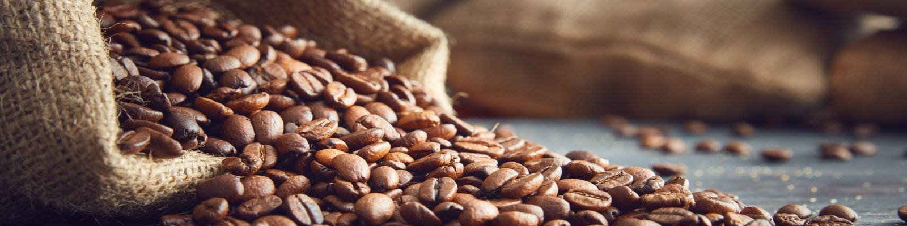
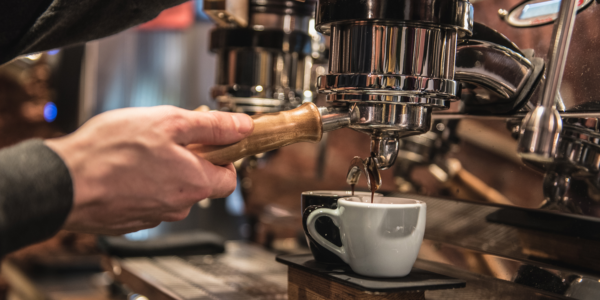

Marcos Mochas
Brewing Tips
Step 1: KNOW YOUR BEAN
The origin of your coffee bean will influence the character of youe coffee, for example, acidity, strength and flavour. African beans are typically dark and acidic, while South American beans tend to be less acidic and of medium strength. For people new to coffee brewing, we recommend Guatamalan beans due to their balanced flavour and medium strength.
Step 2: USE WHOLE BEANS
Coffee made from whole beans is fresher and more flavourful than pre-ground coffee. Ideally, try to find a local roaster in order to get the freshest beans possible.
Step 3: GRIND ONLY WHAT YOU NEED
Don’t grind all of your coffee beans at once. Keep your at-home coffee as fresh as possible by only grinding the amount of coffee beans you plan to use.
Step 4: KEEP IT COOL AND DRY
Once opened, coffee should be stored in a canister that shields sunlight. You should always store coffee in a dark colored-ceramic or glass container—this keeps the coffee fresher. It’s also important to avoid freezing your coffee. When you freeze coffee, there’s a chance that it will absorb moisture, which can affect its taste.
Step 5: USE FILTERED WATER
Water matters!! Keep a pitcher of filtered water in the refridgerator at home to use when brewing your coffee. During the brewing process heat the filtered water to between 195℉ and 250℉.
Step 7: CHOOSE A BREWING METHOD
Not all brewing methods are created equal, so you’ll want to choose something that works best with your lifestyle (and taste buds). For an even, mild pot of coffee, an automatic drip coffeemaker is your best bet. Meanwhile, the French Press is a great, low-maintenance way to get yourself a bolder, darker brew. But if you’re simply wanting a smooth cup for one, a nice pour over could do the trick. Whatever method you ultimately choose, just know you’ll have to adjust how course you grind your coffee.
Step 8: CLEAN YOUR COFFEEMAKER OFTEN
Coffee beans have oil, If you don’t wash your coffee pot—well, then the oil is going to stay. The next day you’re going to brew more coffee and the oil is going to affect the flavour. You should, therefore clean your coffeemaker daily. If you do not do this your coffee will taste burnt because of the oil residue thats been left in the pot.